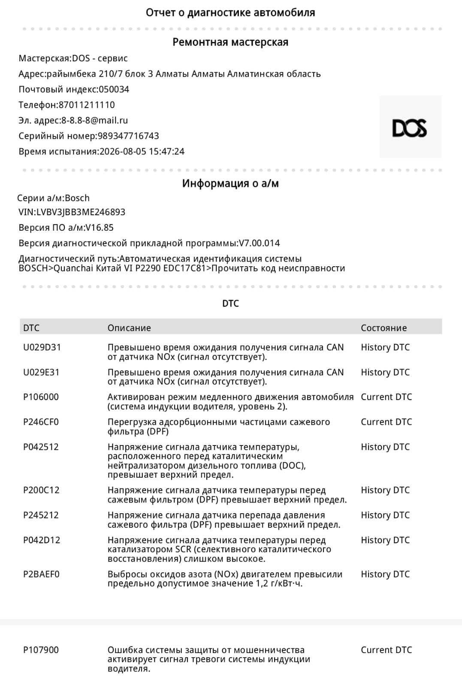
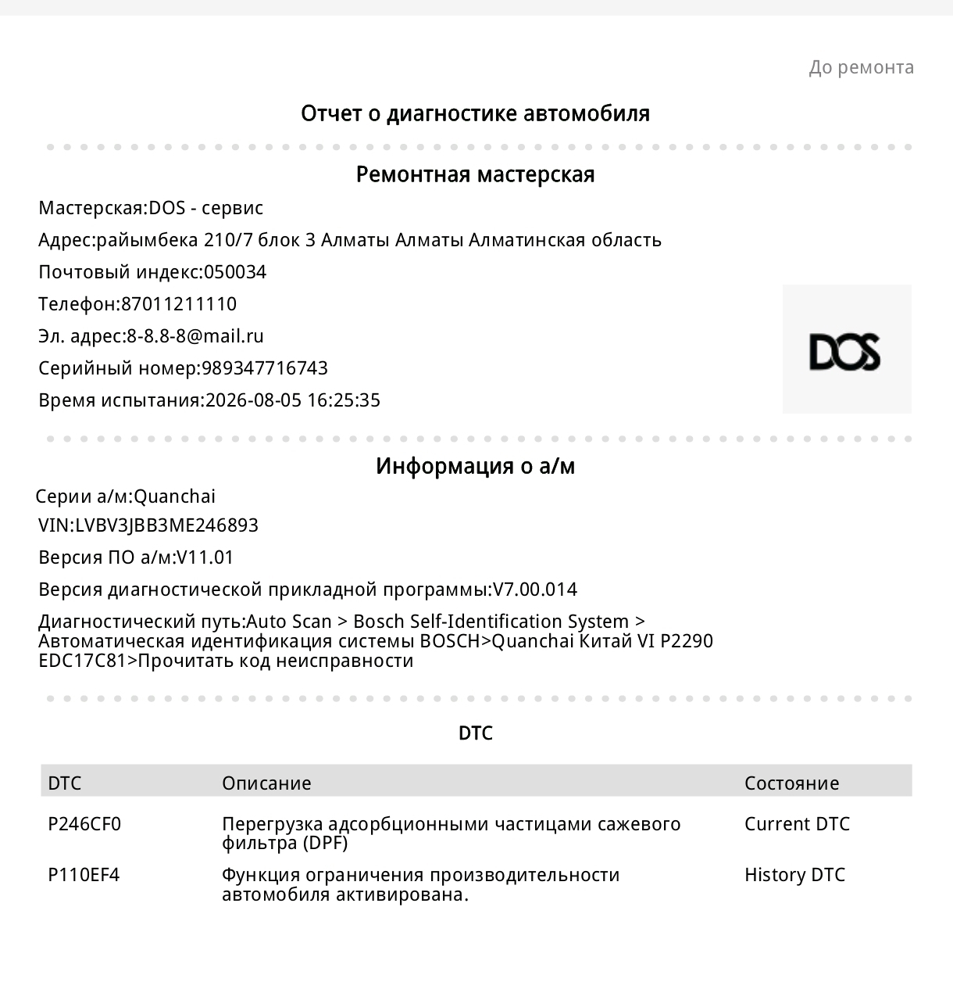
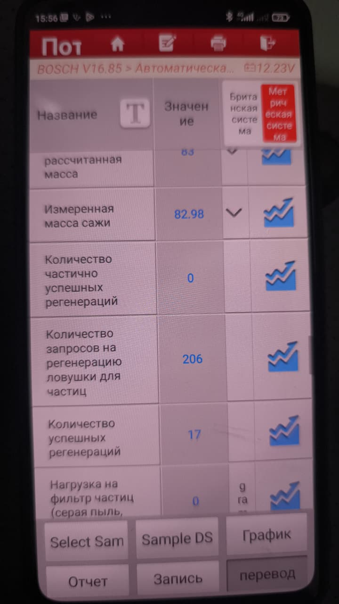
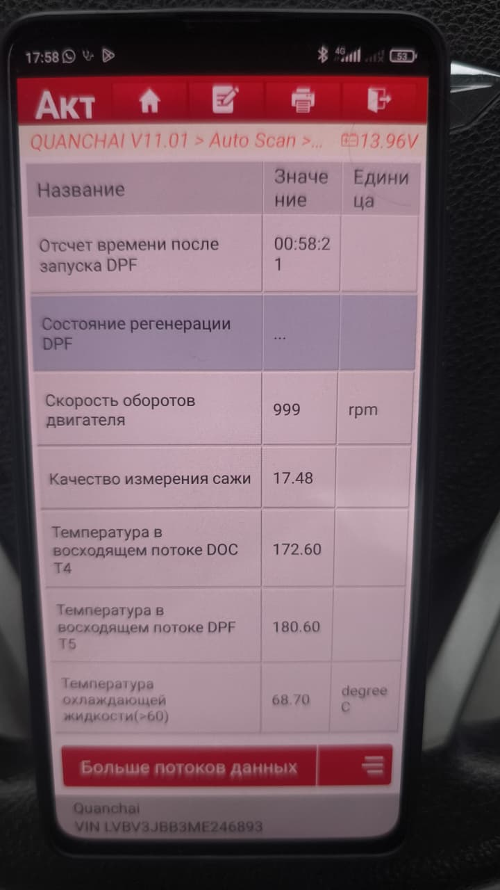
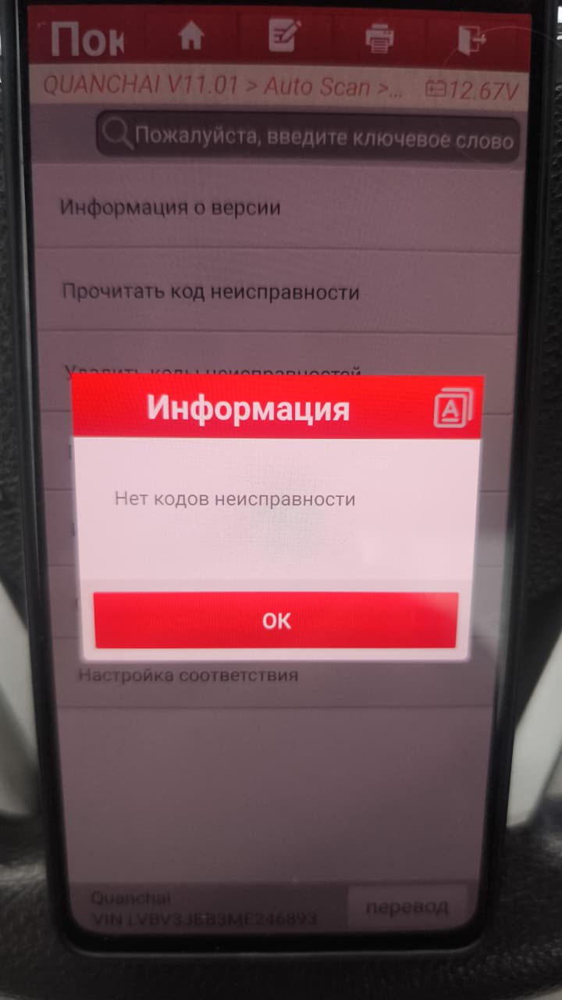

🚛 Forland 2023 — аварийный режим, потеря мощности и забитый сажевый фильтр DPF
🚨 Жалоба владельца
На компьютерную диагностику поступил Forland 2023 года выпуска с пробегом 27 000 км.
Со слов водителя грузовой автомобиль внезапно перешёл в аварийный режим, значительно потерял мощность и перестал нормально разгоняться. На панели приборов появились предупреждения о неисправности системы очистки выхлопных газов.
Для поиска причины была проведена комплексная компьютерная диагностика двигателя и системы нейтрализации отработавших газов.
🔍 Что показала компьютерная диагностика?

После подключения профессионального диагностического оборудования были считаны ошибки электронного блока управления.
В памяти присутствовали следующие неисправности:
- ⚠️ U029D31 — отсутствует связь по CAN с датчиком NOx.
- ⚠️ U029E31 — превышено время ожидания сигнала от датчика NOx.
- ⚠️ P106000 — активирован режим ограничения мощности двигателя.
- ⚠️ P246CF0 — второй уровень загрязнения сажевого фильтра (DPF).
- ⚠️ P042512 — превышение сигнала датчика температуры перед дизельным окислительным катализатором (DOC).
- ⚠️ P200C12 — превышение сигнала датчика температуры.
- ⚠️ P245212 — превышение сигнала датчика температуры перед сажевым фильтром.
- ⚠️ P042D12 — превышение сигнала датчика температуры DPF.
- ⚠️ P2BAEF0 — превышение допустимого уровня выбросов оксидов азота (NOx).
Во время диагностики было установлено, что автоматическая регенерация сажевого фильтра не запускалась, так как система зафиксировала второй уровень загрязнения DPF. При такой степени заполнения фильтра блок управления запрещает автоматический прожиг и переводит автомобиль в режим ограничения мощности.
🛠️ Выполненные работы
Для восстановления работоспособности были выполнены:

- ✅ полная компьютерная диагностика двигателя;
- ✅ анализ текущих параметров системы DPF;
- ✅ проверка состояния системы очистки выхлопных газов;
- ✅ очистка памяти неисправностей;
- ✅ подготовка системы к принудительной регенерации;
- ✅ запуск сервисного прожига сажевого фильтра.
Процесс принудительной регенерации занял 58 минут.
Во время прожига постоянно контролировались:
- 📊 температура выхлопных газов;
- 📊 степень заполнения DPF;
- 📊 текущие параметры двигателя;
- 📊 работа датчиков системы очистки выхлопа.

🔄 Повторная диагностика
После завершения прожига была выполнена повторная компьютерная диагностика.
Все параметры системы пришли в норму.
Ошибки отсутствовали.
Ограничение мощности двигателя было автоматически снято, а аварийный режим полностью исчез.

✅ Результат
После выполненных работ:
- ✔️ успешно выполнена принудительная регенерация DPF;
- ✔️ сажевый фильтр очищен;
- ✔️ ошибки полностью исчезли;
- ✔️ ограничение скорости и мощности снято;
- ✔️ двигатель восстановил полную мощность;
- ✔️ автомобиль вернулся к нормальной эксплуатации.

💡 Полезный совет автоэлектрика
Если на дизельном автомобиле:
- ⚠️ пропала тяга;
- ⚠️ двигатель перешёл в аварийный режим;
- ⚠️ не запускается автоматический прожиг DPF;
- ⚠️ появились ошибки по сажевому фильтру,
не стоит продолжать эксплуатацию автомобиля.
При достижении второго уровня загрязнения DPF автоматическая регенерация уже не выполняется. В этом случае требуется профессиональная компьютерная диагностика и принудительный сервисный прожиг. Если проблему игнорировать, может потребоваться демонтаж или замена сажевого фильтра, что значительно дороже.
👨🔧 Работы выполнил автоэлектрик Олег.
🌐 Прожиг сажевого фильтра DPF в Алматы
☎️ 8-701-121-11-10 Олег
Читайте также: «Volvo FH 2015 — ошибка P24A100 прожиг» и «Комбайн Fendt 2023 не набирал обороты».